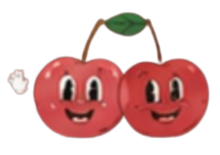
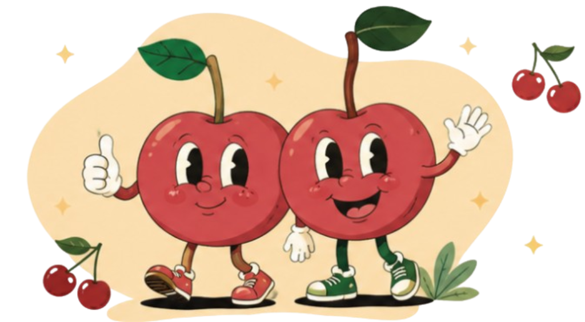

-
Saiba mais →

Bem-Estar mental
Equilíbrio que transforma.

Cherry WellnessDicas, informações e inspiração para você viver melhor em todas as áreas da sua vida.

Equilíbrio que transforma.
Três números que mostram por que movimento, alimentação e saúde mental merecem atenção todos os dias.
dos adultos do mundo não atingem o nível de atividade física recomendado pela OMS.
Vida em movimento → OMS, 2024 24,3%dos brasileiros adultos vivem com obesidade — em 2006 eram 11,8%.
Prato & Saúde → Ministério da Saúde, Vigitel 2023 1 em cada 7adolescentes de 10 a 19 anos vive com algum transtorno mental.
Bem-Estar mental → OMS, agência da ONUPequenos passos também são progresso. Seja gentil com você hoje. 🌱